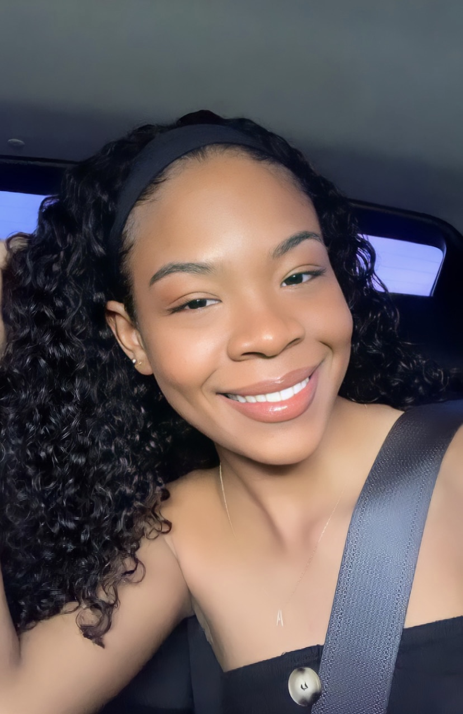

Anisah Delmonte
I'm Anisah, a 20-year-old with a penchant for fries. Currently, I'm pursuing a major in computer science and a minor in management studies. My passion lies at the intersection of technology and business, and I'm eager to combine these fields in my future career. Specifically, I aspire to dive into the exciting world of data science.Web development is interesting because it lets you build cool and useful stuff on the internet, like websites and apps, so you can share your ideas, connect with people, and create amazing online experiences.